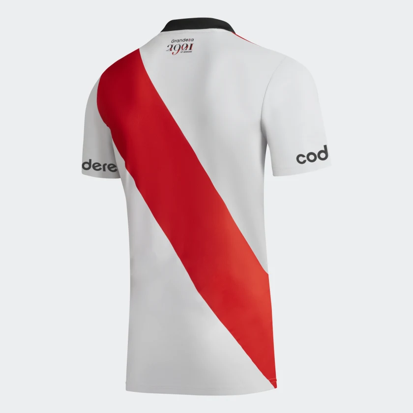
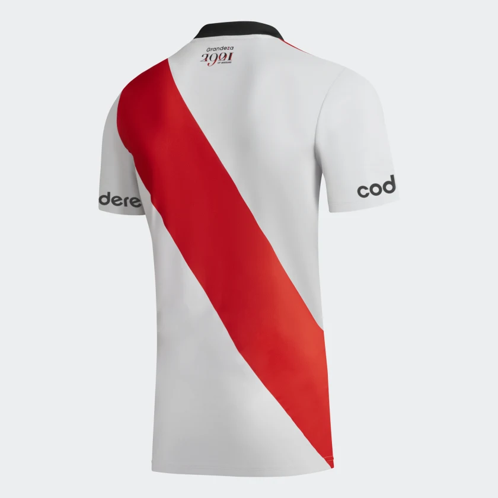
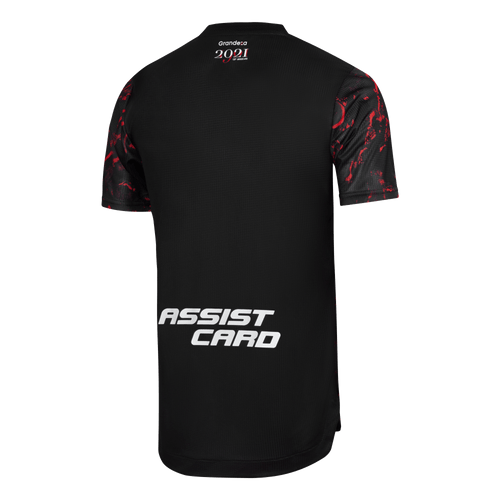
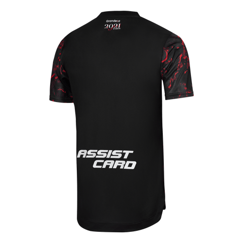

Al comienzo la camiseta de la escuadra riverplatense era blanca, hasta que la banda roja fue cruzada por primera vez a finales de 1904.Entre 1909 y 1932 el club utilizó una camiseta tricolor como principal.
Un 13 de marzo de 1932, Antonio Vespucio Liberti con iniciativa de recuperar aquella camiseta que logró el ascenso, decidió volver a utilizar la banda roja como titular. Antes de su reestreno, el mandatario le daría uno por uno la camiseta a los jugadores dejando las siguientes palabras: «Cuídenla mucho, porque ésta es la camiseta de River».
En 1982 la institución empieza a vestir Adidas hasta la actualidad, renovó el contrato hasta 2027.
En el Torneo Apertura 2001 con motivo del día de la madre, Quilmes (patrocinador en ese entonces) en conformidad con los clubes que auspiciaba, tuvo la idea de poner en las camisetas de los jugadores los nombres de sus respectivas madres.
En 2013, la camiseta titular de River Plate con la banda roja fue elegida en una encuesta como la más linda del mundo por el medio estadounidense Bleacher Repor.También durante ese año, con motivo del 75º aniversario de la inauguración del Estadio Monumental, Adidas Argentina presentó una camiseta especialmente diseñada para la ocasión, que rindió homenaje tanto a este estadio como a los hinchas de River Plate. La edición especial contó con el Estadio Antonio Vespucio Liberti de fondo, y la utilización del color negro como símbolo de la gala y elegancia que la ocasión ameritó. Además contó con un escudo extra al que exhibe el club en cada juego, que incluía el número 75 en referencia al aniversario del mítico estadio.
En 2016 y con motivo del 30° aniversario del gol de Norberto Alonso frente a Boca con la pelota naranja, el cual sirvió para ganar y dar la vuelta olímpica en la Bombonera, se diseñó una camiseta con los colores de dicha pelota. En lugar del tradicional rojo lo ocupó el negro, mientras que en vez de blanco se usó el naranja.En el año 2017 el club se basó en Ángel Labruna, máximo ídolo de la institución, para diseñar la tercera equipación del equipo. Dicho uniforme se estrenó en el día internacional del hincha de River (Fecha de nacimiento de Labruna) y poseía los colores de la histórica corbata que usaba él cuando era director técnico del equipo, estos eran: Negro con una banda blanca, roja y blanca, resaltando los colores del club.
 

 
